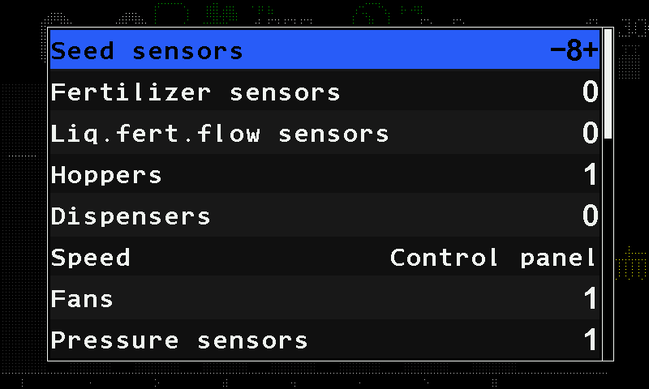

Das Profil
Was das Profil dem Panel sagt, wie Sie es prüfen, was jeder Profilpunkt erlaubt, wann das Panel ein Profil ablehnt und wie es gespeichert wird.
Das Profil sagt dem Panel, welche Geräte und wie viele davon an der Maschine sind. Ein Panel wird meist mit eingestelltem Profil geliefert. Prüfen Sie es, bevor Sie etwas anderes einstellen: Ein Gerät, das im Profil fehlt, wird nie überwacht, und ein Gerät im Profil, das nicht verbaut ist, löst „Connection lost“ (Verbindung verloren) aus.
Das Profil auf dem Startbildschirm prüfen
Schalten Sie das Panel ein und warten Sie, bis der Startbildschirm erscheint. Sehen Sie dann nach:
- Kein Alarm „Connection lost“ — das Panel hat jedes Gerät gefunden, das das Profil angibt.
- Keine weißen Anzeigen mit Ausrufezeichen — kein Gerät ist aus der Überwachung genommen.
- Keine roten Anzeigen mit „X“ — jedes Gerät antwortet.
Was die Anzeigen bedeuten: Anzeigen. Wie Sie ein Gerät in die Überwachung nehmen oder herausnehmen: Sensor in die Überwachung nehmen oder herausnehmen.
Das Profil öffnen
Das Profil braucht die Ebene „Agronomist“ (Agronom) (Agronomenebene freischalten). Tippen Sie mit zwei Fingern auf den Startbildschirm, tippen Sie dann zweimal auf „Service“ (Service) und zweimal auf „Profile“ (Profil). Den gewählten Punkt ändern Sie mit einem Wisch nach rechts oder links.

Die Profilpunkte
| Punkt | Bereich |
|---|---|
| „Seed sensors“ (Kornsensoren) | 2 … 120. Das Menü lässt 1 zu, ein solches Profil wird aber beim Speichern abgelehnt. |
| „Fertilizer sensors“ (Düngersensoren) | 0 … 60; Korn- und Düngersensoren zusammen höchstens 120. |
| „Liq.fert.flow sensors“ (Flüssigdünger-Durchflusssensoren) | 0 … 60 — Sektionssensoren für Flüssigdünger. |
| „Hoppers“ (Behälter) | 0 … 9 |
| „Dispensers“ (Dosierer) | 0 … 9 — Sensoren der Dosierwellen. |
| „Speed“ (Geschwindigkeit) | „No“ (Nein) / „Control panel“ (Bedienpanel; Sensor am Panel angeschlossen) / „Input device“ (Eingangsgerät; ein Radsensor an einem Eingangsgerät) / „Input device (2)“ (zwei Radsensoren an einem Eingangsgerät). |
| „Fans“ (Gebläse) | 0 … 2 |
| „Pressure sensors“ (Drucksensoren) | 0 … 3 |
| „Work position sensor“ (Arbeitsstellungssensor) | „No“ / „Yes“ (Ja) |
| „Markers“ (Spuranzeiger) | „No“ / „One“ (einer) / „Both“ (beide) |
| „No battery charge“ (Batterie lädt nicht), „Emergency oil pressure“ (Öldruck-Notmeldung), „Ignition“ (Zündung), „Low fuel“ (Kraftstoff niedrig), „Air filter“ (Luftfilter) | Die Motorsensoren — je „No“ / „Yes“. |
| „EMD of the seeds“ (Elektromotoren der Saatgutdosierer) | 0 … 60 — Elektromotoren der Saatgutdosierer. |
| „EMD of the fertilizers“ (Elektromotoren der Düngerdosierer) | 0 … 30 — Elektromotoren der Düngerdosierer; beide Motorgruppen zusammen höchstens 60. |
| „Tramline actuators“ (Fahrgassen-Aktuatoren) | 0 … 4 |
| „Liq.fert.pump controller“ (Flüssigdünger-Pumpencontroller) | 0 … 1 |
Am Ende des Menüs folgen „Save settings“ (Einstellungen speichern), „Load settings“ (Einstellungen laden), die beiden Punkte für die Speicherkarte und „Save profile“ (Profil speichern) — siehe unten und Einstellungen speichern und laden.
Wenn das Panel ein Profil ablehnt
Das Panel prüft das ganze Profil, nicht nur den Punkt, den Sie geändert haben. Es lehnt ein Profil ab, wenn:
- Behälter-, Dosierer- und Motorsensoren zusammen mehr als 12 ergeben;
- sie mehr als 10 ergeben, während Druck- und Gebläsesensoren zusammen mehr als vier ergeben;
- Druck- und Gebläsesensoren zusammen mehr als fünf ergeben;
- es Düngermotoren, aber keine Saatgutmotoren gibt, oder Düngermotoren, aber keine Düngersensoren;
- es Elektromotoren oder eine Flüssigdüngerpumpe ohne Geschwindigkeitssensor gibt.
Das Profil speichern
Tippen Sie nach dem Ändern des Profils am Ende des Menüs auf „Save profile“ (Profil speichern) und noch einmal darauf.
Wurde nichts geändert, zeigt das Panel „No changes“ (Keine Änderungen). Verstößt das Profil gegen eine der obigen Regeln, zeigt es „Invalid profile!“ (Ungültiges Profil) in Rot und speichert nichts. Sonst fragt es „Are you sure?“ (Sind Sie sicher?).

Die Frage vor dem Speichern des Profils. Tippen Sie auf „Yes“ (Ja). Das Panel zeigt „Wait...“ (Warten), dann „Saved“ (Gespeichert) und „Restart system“ (System neu starten) und startet von selbst neu.
Ein Tippen auf „No“ oder neben das Fragefenster lässt das gespeicherte Profil, wie es war.
Ihre Maschine tut etwas, das diese Seite nicht beantwortet? Schreiben Sie an support@agriwelt.com — es antwortet ein Ingenieur.